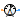
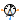

Sensors to measure variables in magnetic networks
For analysis of magnetic networks, only magnetic potential differences and magnetic flux are variables of interest. For that reason, a magnetic potential sensor is not provided.
Extends from Modelica.Icons.SensorsPackage (Icon for packages containing sensors).
| Name | Description |
|---|---|
| ReferenceSensor | Sensor of reference angle gamma |
| FrequencySensor | Frequency sensor |
|  MagneticPotentialSensor | Potential sensor |
|  MagneticPotentialDifferenceSensor | Sensor to measure magnetic potential difference |
| MagneticFluxSensor | Sensor to measure magnetic flux |
| Transient fundamental wave sensors |
Sensor of reference angle gamma
This sensor determines the reference angle of the connected quasi-static magnetic system. The integral of the angular frequency of the quasi-static magnetic system is equal to the reference angle.
Extends from FluxTubes.Interfaces.AbsoluteSensor (Partial potential sensor).
| Name | Description |
|---|---|
| port | Quasi-static magnetic port |
| y | Reference angle [rad] |
Frequency sensor
This sensor can be used to measure the frequency of the reference system. The integral of the angular frequency of the quasi-static magnetic system is equal to the reference angle.
Extends from FluxTubes.Interfaces.AbsoluteSensor (Partial potential sensor).
| Name | Description |
|---|---|
| port | Quasi-static magnetic port |
| y | [Hz] |
Potential sensor
This sensor can be used to measure the complex magnetic potential V_m in a quasi-static magnetic system.
Extends from FluxTubes.Interfaces.AbsoluteSensor (Partial potential sensor).
| Name | Description |
|---|---|
| port | Quasi-static magnetic port |
| y |
Sensor to measure magnetic potential difference
This sensor can be used to measure the complex magnetic potential difference V_m
in a quasi-static magnetic system.
Extends from FluxTubes.Interfaces.RelativeSensor (Partial magnetic voltage or flux sensor).
| Name | Description |
|---|---|
| port_p | Positive quasi-static magnetic port |
| port_n | Negative quasi-static magnetic port |
| y |
Sensor to measure magnetic flux
This sensor can be used to measure the complex magnetic flux Phi of a quasi-static magnetic system.
Extends from FluxTubes.Interfaces.RelativeSensor (Partial magnetic voltage or flux sensor).
| Name | Description |
|---|---|
| port_p | Positive quasi-static magnetic port |
| port_n | Negative quasi-static magnetic port |
| y |